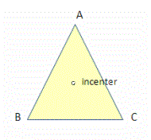

| Ax and Ay | are the x and y coordinates of the point A etc.. |
| a, b and c | are the side lengths opposite vertex A, B and C |
| p | is perimeter of the triangle (a+b+c) |
Recall that the incenter of a triangle is the point where the triangle's three angle bisectors intersect. It is also the center of the triangle's incircle.
The coordinates of the incenter are the weighted average of the coordinates of the vertices, where the weights are the lengths of the corresponding sides.
The formula first requires you calculate the three side lengths of the triangle. To do this use the method described in Distance between two points. Once you know the three side lengths, you calculate the perimeter as the sum of these three lengths.

| x | y | |
| A | ||
| B | ||
| C | ||
| Incenter | ||
Use the calculator above to calculate coordinates of the incenter of the triangle ABC. Enter the x,y coordinates of each vertex, in any order.
In the interest of clarity in the applet above, the coordinates are rounded off to integers. This can cause calculations to be slightly off.
For more see Teaching Notes